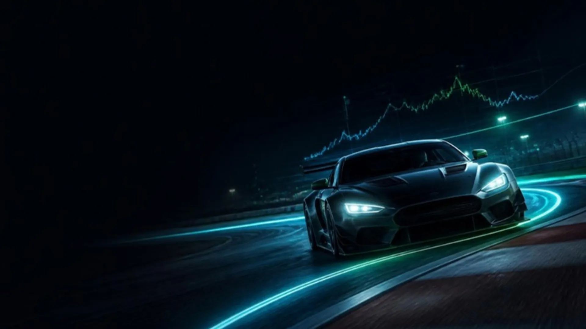
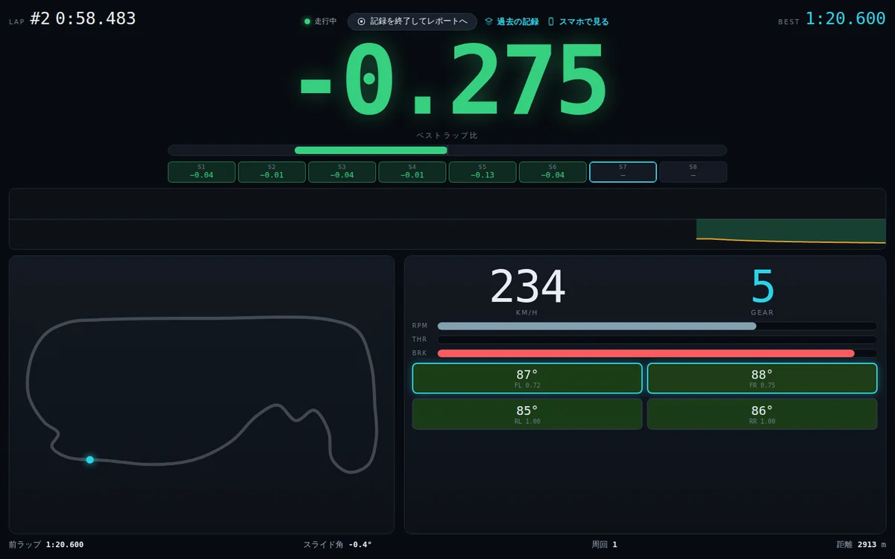
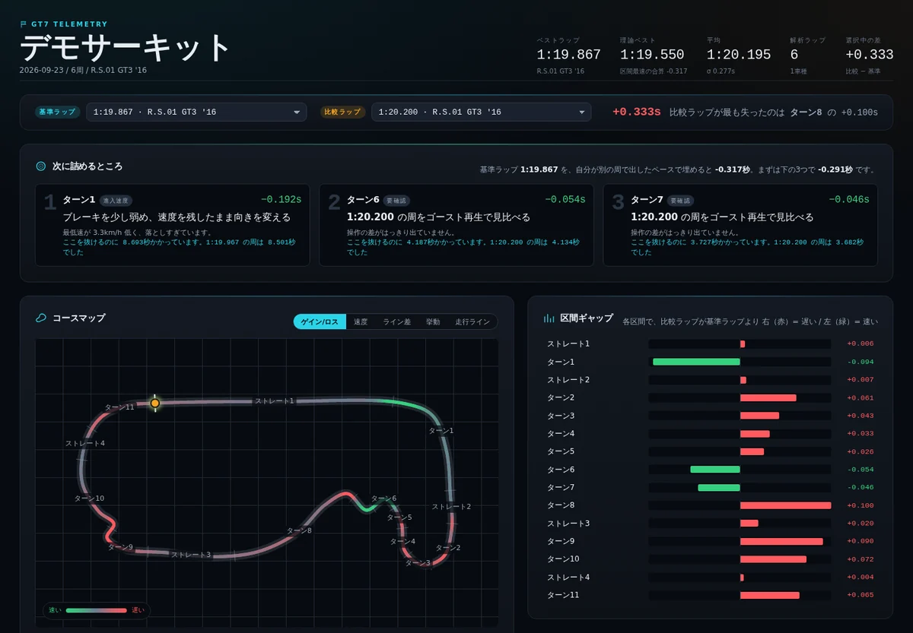
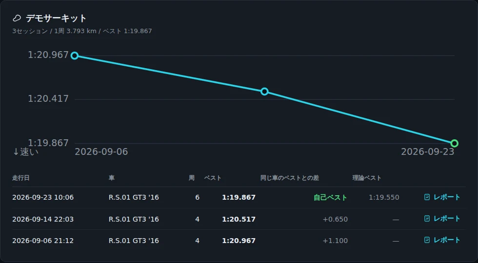

コースは形で自動判別
名前を聞かれるのは初めてのコースだけ。距離が近い実在サーキットを候補に出すので、たいていは番号を押すだけです。

How it works
黒い窓で操作するのは、最初にキーを 1 回押すところだけ。あとはブラウザで完結します。PS5 側の設定は変えません。
Live 01
ベストラップとのタイム差（デルタ）を画面いっぱいに。サブモニタやタブレットに出したまま走れます。

Report 02
走り終えると、そのままレポートに切り替わります。最初に読むのは先頭のカード 3 枚だけ。

History 03
走行はコースごとに積み上がります。同じコースを 2 回以上走ると、ベストタイムの推移がグラフに。

And more
名前を聞かれるのは初めてのコースだけ。距離が近い実在サーキットを候補に出すので、たいていは番号を押すだけです。
記録したまま別のコースへ移ると自動で区切ります。車を替えた日は、車ごとのレポートも作ります。
report.html だけで完結。Discord に投げれば、受け取った人もダブルクリックで同じレポートを見られます。
GT7 が配信しているデータを、同じネットワークの PC で受け取るだけ。外部への通信もしません。
Setup
最初の 1 回だけ。条件はひとつ、PS5 と PC が同じ Wi-Fi／ルーターにつながっていること。
sessions フォルダに、コース別・日時別で保存されます。デスクトップでもドキュメントでも。展開しないまま中のファイルを実行しないでください（うまく動きません）。
必要なものを自動でそろえます。Python のインストールは要りません。PC に無ければ必要な分だけ自動で取ってきます（2〜3 分、インターネット接続が必要）。
「GT7テレメトリ」（記録する）と 「GT7テレメトリ（記録一覧）」（振り返る）。以後はこの 2 つしか使いません。
初めて記録を始めるときにWindows ファイアウォールの確認が出たら「アクセスを許可する」を押してください。拒否すると PS5 からのデータを受け取れません。
Q & A
① GT7 がコース上にあるか。メニュー画面やリプレイではデータが配信されません。
② PS5 と PC が同じネットワークか。PC が有線で、PS5 が別の Wi-Fi（ゲスト用など）につながっているのが典型例です。
③ ファイアウォールで拒否していないか。初回の確認で拒否した場合は、Windows の設定からこのアプリの通信を許可し直してください。
黒い窓に出ているアドレス（http://127.0.0.1:8770）を、ブラウザに直接入力して開いてください。
完走した周までは自動で保存されています。「GT7テレメトリ（記録一覧）」から確認できます。
レポートの読み方や、コース名・区間名の変え方などは 使い方ガイド へ。